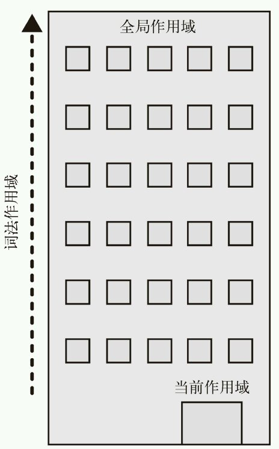
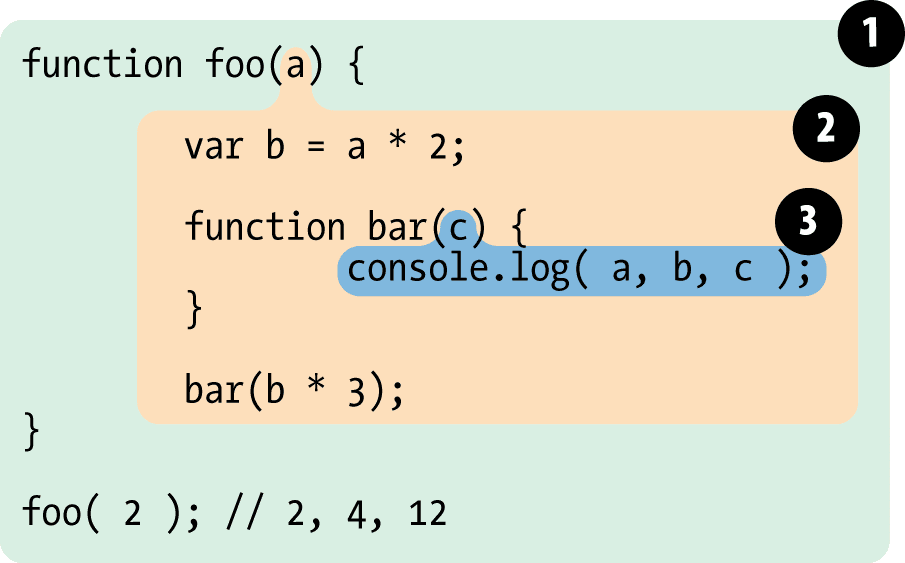

js引擎的好朋友，负责收集并维护由所有声明的标识符（变量）组成的一系列查询，并实施一套非常严格的规则，确定当前执行的代码对这些标识符的访问权限
1）作用域链
作用域链：函数内定义的变量在函数外不可见，但函数访问的变量既可以来自自身的作用域，又可以来自“父级作用域”，就形成了一条作用域链（把作用域链比喻成一个建筑，当前作用域找不到的东西一直往上找，直到找到顶层（全局作用域））
2）词法作用域
其实我们可以对比传统面向对象的（如JAVA、C#）中的变量的作用域，我们知道C#中的变量作用域是块级的，即这个变量只能活动在定义他的一个直接外界内，如if子句内，for子句内定义的变量外界是无法读取的。而js中呢，变量却不是这样的，在同一个函数内定义的变量其它的成员是可以访问的，词法作用域是作用域的一种工作模型，定义在词法阶段的作用域，是由你在写代码时将变量和块作用域写在哪里来决定的（例如：当定义了一个函数后，无论函数在哪里被调用，它的词法作用域都只由函数被声明时所处的位置决定的，请注意考虑声明提升，也就是说，它声明时所在的作用域就是它的词法作用域，与它在哪里使用无关）
 ①包含着整个全部作用域，其中只要一个标识符：foo ②包含着foo所创建的作用域，其中有三个标识符：a,b,bar ③包含着bar所创建的作用域，其中有一个标识符：c eg：c的词法作用域，由于c在bar中声明，bar作用域就是c的词法作用域3)函数作用域与块作用域
函数作用域（JavaScript最常用的作用域单元）的含义是指，属于这个函数的全部变量都可以在整个函数范围内使用及复用（事实上在嵌套的作用域中也可以使用），本质上，声明在一个函数内部的变量或函数会在所处的作用域中“隐藏起来”，这是有意为之的良好软件的设计原则；块作用域指的是函数和变量不仅可以属于所处的作用域，也可以属于某个代码块（通常指{...}内部）
4）提升
包括变量和函数在内的所有声明都会在任何代码被执行前首先被处理，这个声明位置被“移动”到各自作用域的顶端的过程叫提升。注意，只有声明本身会被提升，而赋值或其他运行逻辑会留在原地，而且函数会首先被提升，然后才是变量。
函数被提升:声明式会自动将声明放在前面并且执行赋值过程。而变量式则是先将声明提升，然后到赋值处再执行赋值
js函数在定义它们的作用域里运行，而不是在执行它们的作用域里运行
js引擎：从头到尾负责整个JavaScript程序的编译及执行过程 编译器：引擎的好朋友，负责语法分析及代码生成等脏活累活 Javascript 则是在运行时编译，边编译边执行，这个机制涉及到三样东西： 1. 引擎 2. 编译器 3. 作用域 编译器首先对代码进行编译，然后将生成的代码提供给引擎执行。 引擎和编译器工作的时候，都会用到作用域。编译器编译时，会在 作用域中查找标示符，如果没有找到的话则会在对应的作用域创建 一个标示符。引擎在执行时不断的在作用域中查找标示符，如果一 直到全局对象(Global object)都没有找到的话则抛出一个 `Reference Error` 并停止代码的执行。 LHS查询（查询变量的容器本身）和RHS查询（简单查询某个变量的值）